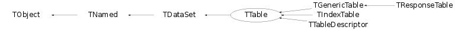

class TTable: public TDataSet
TTable Wraps the array of the plain C-structures (one C-structure per element) class TTable provides the automatic schema evolution for the derived "table" classes saved with ROOT format. "Automatic Schema evolution" provides: - skipping data-member if it is not present for the current implementation of the "table" but was present at the time the table was written; - assign a default value ZERO for the brand-new data-members, those were not in the structure when the object was written but present now; - trace propely any change in the order of the data-members To enjoy this class one has to derive his/her own custom class: St_dst_track_Table.h: #ifndef STAF_St_dst_track_Table #define STAF_St_dst_track_Table #include "TTable.h" #include "dst_track.h" the C-structure defintion may be kept separately typedef struct dst_track_st { float r0; /* radius at start (cm). See also comments* float phi0; /* azimuthal angle at start (deg) * float z0; /* z-coord. at start (cm) * float psi; /* azimuthal angle of pT vector (deg) * float tanl; /* tan(dip) =pz/pt at start * float invpt; /* 1/pt at start (GeV/c)^(-1) * float curvature; /* Track curvature (1/cm) * float covar[15]; /* full covariance matrix * float chisq[2]; /* Chi-square per degree of freedom * float x_first[3]; /* coord. of first measured point (cm) * float x_last[3]; /* coord. of last measured point (cm) * float length; /* from first to last point (cm) * float impact; /* primary vertex (cm) * unsigned long map[2]; /* extrap. info. (see preceeding comments)* int id; /* Primary key (see comments) * int iflag; /* bitmask quality info. (see comments) * int det_id; /* Detector id information * int method; /* Track finding/fitting method, packed * int pid; /* Geant particle ID for assumed mass * int n_point; /* SVT, TPC, FTPC component #s are packed * int n_max_point; /* SVT, TPC, FTPC component #s are packed * int n_fit_point; /* SVT, TPC, FTPC component #s are packed * int icharge; /* Particle charge in units of |e| * int id_start_vertex; /* final fit and primary track candidates * } DST_TRACK_ST; class St_dst_track : public TTable { public: ClassDefTable(St_dst_track,dst_track_st) ClassDef(St_dst_track,2) //C++ wrapper for <dst_track> StAF table }; #endif where the CPP macro defines several convinient methods for the "table" class (see: $ROOTSYS/table/inc/Ttypes.h for details: #define ClassDefTable(className,structName) protected: static TTableDescriptor *fgColDescriptors; virtual TTableDescriptor *GetDescriptorPointer() const { return fgColDescriptors;} virtual void SetDescriptorPointer(TTableDescriptor *list) const { fgColDescriptors = list;} public: typedef structName* iterator; className() : TTable(_QUOTE_(className),sizeof(structName)) {SetType(_QUOTE_(structName));} className(const char *name) : TTable(name,sizeof(structName)) {SetType(_QUOTE_(structName));} className(Int_t n) : TTable(_QUOTE_(className),n,sizeof(structName)) {SetType(_QUOTE_(structName));} className(const char *name,Int_t n) : TTable(name,n,sizeof(structName)) {SetType(_QUOTE_(structName));} structName *GetTable(Int_t i=0) const { return ((structName *)GetArray())+i;} structName &operator[](Int_t i){ assert(i>=0 && i < GetNRows()); return *GetTable(i); } const structName &operator[](Int_t i) const { assert(i>=0 && i < GetNRows()); return *((const structName *)(GetTable(i))); } structName *begin() const { return GetNRows()? GetTable(0):0;} structName *end() const {Int_t i = GetNRows(); return i? GetTable(i):0;} The class implementation file may 2 lines and look as follows: (for the example above): St_dst_track_Table.cxx: #include "St_dst_track_Table.h" TableClassImpl(St_dst_track, dst_track_st) LinkDef.h To provide ROOT I/O for this class TWO CINT dictonary entries should be defined with your custom LinkDef.h file 1. First entry (as usually) for the class derived from TTable for example: #pragma C++ class St_dst_track 2. Second entry for the C-structure wrapped into the class. Since C-structuire is not derived from TObject it must be properly defined as "foreign" ROOT class #pragma C++ class dst_track_st+; meta-variables i$ and n$ introduced where "i$" stands for the current row index "n$" stands for the total number of rows meta-variable can be used along the normal table column names in the expressions (see for example method TTable::Draw
Function Members (Methods)
public:
| TTable(const TTable& table) | |
| TTable(const char* name = 0, Int_t size = 0) | |
| TTable(const char* name, Int_t n, Int_t size) | |
| TTable(const char* name, Int_t n, Char_t* array, Int_t size) | |
| TTable(const char* name, const char* type, Int_t n, Char_t* array, Int_t size) | |
| virtual | ~TTable() |
| void | TObject::AbstractMethod(const char* method) const |
| virtual void | TDataSet::Add(TDataSet* dataset) |
| virtual Int_t | AddAt(const void* c) |
| virtual void | AddAt(const void* c, Int_t i) |
| virtual void | AddAt(TDataSet* dataset, Int_t idx = 0) |
| virtual void | TDataSet::AddAtAndExpand(TDataSet* dataset, Int_t idx = 0) |
| virtual void | TDataSet::AddFirst(TDataSet* dataset) |
| virtual void | TDataSet::AddLast(TDataSet* dataset) |
| virtual void | Adopt(Int_t n, void* array) |
| virtual void | TObject::AppendPad(Option_t* option = "") |
| virtual Long_t | AppendRows(const void* row, UInt_t nRows) |
| virtual void | AsString(void* buf, TTable::EColumnType type, Int_t width, ostream& out) const |
| const void* | At(Int_t i) const |
| virtual void | Browse(TBrowser* b) |
| static TClass* | Class() |
| virtual const char* | TObject::ClassName() const |
| virtual TObject* | TDataSet::Clone(const char* newname = "") const |
| virtual Int_t | TNamed::Compare(const TObject* obj) const |
| virtual void | TNamed::Copy(TObject& named) const |
| Int_t | CopyRows(const TTable* srcTable, Long_t srcRow = 0, Long_t dstRow = 0, Long_t nRows = 0, Bool_t expand = kFALSE) |
| virtual void | CopySet(TTable& array) |
| virtual void | DeleteRows(Long_t indx, UInt_t nRows = 1) |
| virtual Int_t | TObject::DistancetoPrimitive(Int_t px, Int_t py) |
| virtual void | Draw(Option_t* opt) |
| virtual TH1* | Draw(TCut varexp, TCut selection, Option_t* option = "", Int_t nentries = 1000000000, Int_t firstentry = 0) |
| virtual TH1* | Draw(const char* varexp, const char* selection, Option_t* option = "", Int_t nentries = 1000000000, Int_t firstentry = 0)MENU |
| virtual void | TObject::DrawClass() constMENU |
| virtual TObject* | TObject::DrawClone(Option_t* option = "") constMENU |
| virtual void | TObject::Dump() constMENU |
| virtual void | TObject::Error(const char* method, const char* msgfmt) const |
| virtual void | TObject::Execute(const char* method, const char* params, Int_t* error = 0) |
| virtual void | TObject::Execute(TMethod* method, TObjArray* params, Int_t* error = 0) |
| virtual void | TObject::ExecuteEvent(Int_t event, Int_t px, Int_t py) |
| virtual void | TObject::Fatal(const char* method, const char* msgfmt) const |
| virtual void | TNamed::FillBuffer(char*& buffer) |
| virtual TDataSet* | TDataSet::Find(const char* path) const |
| virtual TDataSet* | TDataSet::FindByName(const char* name, const char* path = "", Option_t* opt = "") const |
| virtual TDataSet* | TDataSet::FindByPath(const char* path) const |
| virtual TDataSet* | TDataSet::FindByTitle(const char* title, const char* path = "", Option_t* opt = "") const |
| virtual TObject* | TDataSet::FindObject(const char* name) const |
| virtual TObject* | TDataSet::FindObject(const TObject* o) const |
| virtual TDataSet* | TDataSet::First() const |
| virtual void | Fit(const char* formula, const char* varexp, const char* selection = "", Option_t* option = "", Option_t* goption = "", Int_t nentries = 1000000000, Int_t firstentry = 0)MENU |
| void* | GetArray() const |
| virtual TSeqCollection* | TDataSet::GetCollection() const |
| virtual const Char_t* | GetColumnComment(Int_t columnIndex) const |
| virtual Int_t | GetColumnIndex(const Char_t* columnName) const |
| virtual const Char_t* | GetColumnName(Int_t columnIndex) const |
| virtual UInt_t | GetColumnSize(Int_t columnIndex) const |
| virtual Int_t | GetColumnSize(const Char_t* columnName = 0) const |
| virtual TTable::EColumnType | GetColumnType(Int_t columnIndex) const |
| virtual TTable::EColumnType | GetColumnType(const Char_t* columnName = 0) const |
| virtual UInt_t | GetDimensions(Int_t columnIndex) const |
| virtual Int_t | GetDimensions(const Char_t* columnName = 0) const |
| virtual Option_t* | TObject::GetDrawOption() const |
| static Long_t | TObject::GetDtorOnly() |
| virtual const char* | TObject::GetIconName() const |
| virtual const UInt_t* | GetIndexArray(Int_t columnIndex) const |
| TList* | TDataSet::GetList() const |
| virtual Int_t | TDataSet::GetListSize() const |
| static TDataSet* | TDataSet::GetMainSet() |
| TObject* | TDataSet::GetMother() const |
| virtual const char* | TNamed::GetName() const |
| virtual Long_t | GetNRows() const |
| virtual UInt_t | GetNumberOfColumns() const |
| TObjArray* | TDataSet::GetObjArray() const |
| virtual TObject* | TDataSet::GetObject() const |
| virtual char* | TObject::GetObjectInfo(Int_t px, Int_t py) const |
| static Bool_t | TObject::GetObjectStat() |
| virtual UInt_t | GetOffset(Int_t columnIndex) const |
| virtual Int_t | GetOffset(const Char_t* columnName = 0) const |
| virtual Option_t* | TObject::GetOption() const |
| virtual TDataSet* | TDataSet::GetParent() const |
| virtual TClass* | GetRowClass() const |
| virtual TTableDescriptor* | GetRowDescriptors() const |
| virtual Long_t | GetRowSize() const |
| Int_t | GetSize() const |
| virtual TTableDescriptor* | GetTableDescriptors() const |
| virtual Long_t | GetTableSize() const |
| virtual const char* | TNamed::GetTitle() const |
| virtual const Char_t* | GetType() const |
| static TTable::EColumnType | GetTypeId(const char* typeName) |
| static const char* | GetTypeName(TTable::EColumnType type) |
| virtual UInt_t | GetTypeSize(Int_t columnIndex) const |
| virtual Int_t | GetTypeSize(const Char_t* columnName = 0) const |
| virtual UInt_t | TObject::GetUniqueID() const |
| virtual Bool_t | TObject::HandleTimer(TTimer* timer) |
| virtual Long_t | HasData() const |
| virtual ULong_t | TNamed::Hash() const |
| virtual void | TObject::Info(const char* method, const char* msgfmt) const |
| virtual Bool_t | TObject::InheritsFrom(const char* classname) const |
| virtual Bool_t | TObject::InheritsFrom(const TClass* cl) const |
| virtual Long_t | InsertRows(const void* rows, Long_t indx, UInt_t nRows = 1) |
| virtual void | TObject::Inspect() constMENU |
| virtual TDataSet* | TDataSet::Instance() const |
| static TDataSet* | TDataSet::instance() |
| void | TDataSet::InvertAllMarks()MENU |
| void | TObject::InvertBit(UInt_t f) |
| virtual TClass* | IsA() const |
| virtual Bool_t | TDataSet::IsEmpty() const |
| virtual Bool_t | TObject::IsEqual(const TObject* obj) const |
| virtual Bool_t | IsFolder() const |
| virtual Bool_t | TDataSet::IsMarked() const |
| Bool_t | TObject::IsOnHeap() const |
| virtual Bool_t | TNamed::IsSortable() const |
| virtual Bool_t | TDataSet::IsThisDir(const char* dirname, int len = -1, int ignorecase = 0) const |
| Bool_t | TObject::IsZombie() const |
| virtual TDataSet* | TDataSet::Last() const |
| virtual void | TDataSet::ls(Option_t* option = "") const |
| virtual void | TDataSet::ls(Int_t depth) const |
| virtual Char_t* | MakeExpression(const Char_t** expressions, Int_t nExpressions) |
| void | TDataSet::Mark()MENU |
| void | TDataSet::Mark(UInt_t flag, TDataSet::EBitOpt reset = kSet) |
| void | TDataSet::MarkAll()MENU |
| void | TObject::MayNotUse(const char* method) const |
| Int_t | NaN() |
| static TTable* | New(const Char_t* name, const Char_t* type, void* array, UInt_t size) |
| virtual TDataSet* | TDataSet::Next() const |
| virtual Bool_t | TObject::Notify() |
| void | TObject::Obsolete(const char* method, const char* asOfVers, const char* removedFromVers) const |
| static void | TObject::operator delete(void* ptr) |
| static void | TObject::operator delete(void* ptr, void* vp) |
| static void | TObject::operator delete[](void* ptr) |
| static void | TObject::operator delete[](void* ptr, void* vp) |
| void* | TObject::operator new(size_t sz) |
| void* | TObject::operator new(size_t sz, void* vp) |
| void* | TObject::operator new[](size_t sz) |
| void* | TObject::operator new[](size_t sz, void* vp) |
| TTable& | operator=(const TTable& rhs) |
| void* | operator[](Int_t i) |
| const void* | operator[](Int_t i) const |
| virtual void | TObject::Paint(Option_t* option = "") |
| virtual TDataSet::EDataSetPass | TDataSet::Pass(void callback, Int_t depth = 0) |
| virtual TDataSet::EDataSetPass | TDataSet::Pass(void callback, void* user, Int_t depth = 0) |
| virtual TString | TDataSet::Path() const |
| virtual void | TObject::Pop() |
| virtual TDataSet* | TDataSet::Prev() const |
| virtual void | Print(Option_t* opt = "") const |
| virtual Char_t* | Print(Char_t* buf, Int_t n) const |
| virtual const Char_t* | Print(Int_t row, Int_t rownumber = 10, const Char_t* colfirst = "", const Char_t* collast = "") constMENU |
| virtual void | PrintContents(Option_t* opt = "") const |
| virtual const Char_t* | PrintHeader() constMENU |
| virtual void | Project(const char* hname, const char* varexp, const char* selection = "", Option_t* option = "", Int_t nentries = 1000000000, Int_t firstentry = 0) |
| virtual Int_t | Purge(Option_t* opt = "") |
| virtual Int_t | TObject::Read(const char* name) |
| void* | ReAllocate() |
| void* | ReAllocate(Int_t newsize) |
| virtual void | TObject::RecursiveRemove(TObject* obj) |
| virtual void | TDataSet::Remove(TDataSet* set) |
| virtual TDataSet* | TDataSet::RemoveAt(Int_t idx) |
| virtual void | Reset(Int_t c = 0) |
| void | TObject::ResetBit(UInt_t f) |
| virtual void | ResetMap(Bool_t wipe = kTRUE) |
| virtual void | TObject::SaveAs(const char* filename = "", Option_t* option = "") constMENU |
| virtual void | SavePrimitive(ostream& out, Option_t* option = "") |
| virtual void | Set(Int_t n) |
| virtual void | Set(Int_t n, Char_t* array) |
| void | TObject::SetBit(UInt_t f) |
| void | TObject::SetBit(UInt_t f, Bool_t set) |
| virtual void | TObject::SetDrawOption(Option_t* option = "")MENU |
| static void | TObject::SetDtorOnly(void* obj) |
| virtual void | TDataSet::SetMother(TDataSet* parent = 0) |
| virtual void | TNamed::SetName(const char* name)MENU |
| virtual void | TNamed::SetNameTitle(const char* name, const char* title) |
| virtual void | SetNRows(Int_t n) |
| virtual void | TDataSet::SetObject(TObject* obj) |
| static void | TObject::SetObjectStat(Bool_t stat) |
| virtual void | TDataSet::SetParent(TDataSet* parent = 0) |
| virtual void | TNamed::SetTitle(const char* title = "")MENU |
| virtual void | TObject::SetUniqueID(UInt_t uid) |
| virtual void | TDataSet::SetWrite() |
| virtual void | ShowMembers(TMemberInspector& insp) |
| virtual void | TDataSet::Shunt(TDataSet* newParent = 0) |
| virtual Int_t | TNamed::Sizeof() const |
| virtual void | TDataSet::Sort() |
| virtual void | Streamer(TBuffer& b) |
| void | StreamerNVirtual(TBuffer& b) |
| virtual void | TObject::SysError(const char* method, const char* msgfmt) const |
| static const char* | TableDictionary() |
| Bool_t | TObject::TestBit(UInt_t f) const |
| Int_t | TObject::TestBits(UInt_t f) const |
| void | TDataSet::UnMark()MENU |
| void | TDataSet::UnMarkAll()MENU |
| virtual void | Update() |
| virtual void | Update(TDataSet* set, UInt_t opt = 0) |
| virtual void | TObject::UseCurrentStyle() |
| virtual void | TObject::Warning(const char* method, const char* msgfmt) const |
| virtual Int_t | TDataSet::Write(const char* name = 0, Int_t option = 0, Int_t bufsize = 0) |
| virtual Int_t | TDataSet::Write(const char* name = 0, Int_t option = 0, Int_t bufsize = 0) const |
protected:
| void | TDataSet::AddMain(TDataSet* set) |
| Bool_t | BoundsOk(const char* where, Int_t at) const |
| virtual void | Clear(Option_t* opt = "") |
| void | CopyStruct(Char_t* dest, const Char_t* src) |
| Char_t* | Create() |
| virtual void | Delete(Option_t* opt = "") |
| virtual void | TObject::DoError(int level, const char* location, const char* fmt, va_list va) const |
| virtual Bool_t | EntryLoop(const Char_t* exprFileName, Int_t& action, TObject* obj, Int_t nentries = 1000000000, Int_t firstentry = 0, Option_t* option = "") |
| virtual TTableDescriptor* | GetDescriptorPointer() const |
| TDataSet* | TDataSet::GetRealParent() |
| void | TDataSet::MakeCollection() |
| void | TObject::MakeZombie() |
| Bool_t | OutOfBoundsError(const char* where, Int_t i) const |
| void | ReAlloc(Int_t newsize) |
| virtual void | SetDescriptorPointer(TTableDescriptor* list) |
| Int_t | SetfN(Long_t len) |
| virtual void | TDataSet::SetMother(TObject* mother) |
| void | SetTablePointer(void* table) |
| virtual void | SetType(const char *const type) |
| void | SetUsedRows(Int_t n) |
| static TDataSet::EDataSetPass | TDataSet::SortIt(TDataSet* ds) |
| static TDataSet::EDataSetPass | TDataSet::SortIt(TDataSet* ds, void* user) |
| void | StreamerHeader(TBuffer& b, Version_t version = 3) |
| void | StreamerTable(TBuffer& b, Version_t version = 3) |
| static const char* | TableDictionary(const char* className, const char* structName, TTableDescriptor*& ColDescriptors) |
Data Members
public:
| enum EColumnType { | kNAN | |
| kFloat | ||
| kInt | ||
| kLong | ||
| kShort | ||
| kDouble | ||
| kUInt | ||
| kULong | ||
| kUShort | ||
| kUChar | ||
| kChar | ||
| kPtr | ||
| kBool | ||
| kEndColumnType | ||
| }; | ||
| enum ETableBits { | kIsNotOwn | |
| }; | ||
| enum TDataSet::EDataSetPass { | kContinue | |
| kPrune | ||
| kStop | ||
| kUp | ||
| kStruct | ||
| kAll | ||
| kRefs | ||
| kMarked | ||
| }; | ||
| enum TDataSet::ESetBits { | kMark | |
| kArray | ||
| }; | ||
| enum TDataSet::EBitOpt { | kSet | |
| kReset | ||
| }; | ||
| enum TObject::EStatusBits { | kCanDelete | |
| kMustCleanup | ||
| kObjInCanvas | ||
| kIsReferenced | ||
| kHasUUID | ||
| kCannotPick | ||
| kNoContextMenu | ||
| kInvalidObject | ||
| }; | ||
| enum TObject::[unnamed] { | kIsOnHeap | |
| kNotDeleted | ||
| kZombie | ||
| kBitMask | ||
| kSingleKey | ||
| kOverwrite | ||
| kWriteDelete | ||
| }; |
protected:
| TSeqCollection* | TDataSet::fList | List of the the the objects included into this dataset |
| Long_t | fMaxIndex | The used capacity of this array |
| Int_t | fN | Number of array elements |
| TString | TNamed::fName | object identifier |
| TDataSet* | TDataSet::fParent | pointer to mother of the directory |
| Long_t | fSize | Size of the one element (row) of the table |
| Char_t* | fTable | Array of (fN*fSize) longs |
| TString | TNamed::fTitle | object title |
| static TDataSet* | TDataSet::fgMainSet | pointer the main dataset; |
Class Charts
{kind=link}
{kind=link}
{kind=link}
{kind=link}

Function documentation
TTableDescriptor * GetTableDescriptors() const
protected: create a new TTableDescriptor descriptor for this table
Int_t CopyRows(const TTable* srcTable, Long_t srcRow = 0, Long_t dstRow = 0, Long_t nRows = 0, Bool_t expand = kFALSE)
CopyRows copies nRows from starting from the srcRow of srcTable to the dstRow in this table upto nRows or by the end of this table. This table if automaticaly increased if expand = kTRUE. The old values of this table rows are to be destroyed and replaced with the new ones. PARAMETERS: srcTable - a pointer to the table "donor" srcRow - the index of the first row of the table donor to copy from dstRow - the index of the first row of this table to copy to nRows - the total number of rows to be copied. This table will be expanded as needed if expand = kTRUE (it is kFALSE "by default") = 0 to copy ALL remain rows from the srcTable. expand - flag whether this table should reallocated if needed. RETURN: the number of the rows been copied
void DeleteRows(Long_t indx, UInt_t nRows = 1)
TH1 * Draw(TCut varexp, TCut selection, Option_t* option = "", Int_t nentries = 1000000000, Int_t firstentry = 0)
TH1 * Draw(const char* varexp, const char* selection, Option_t* option = "", Int_t nentries = 1000000000, Int_t firstentry = 0)
*-*-*-*-*-*Draw expression varexp for specified entries *-* =========================================== varexp is an expression of the general form e1:e2:e3 where e1,etc is a C++ expression referencing a combination of the TTable columns One can use two extra meta variable "i$" and "n$" along with the table column names. i$ is to involve the current row number n$ refers the total num,ber of rows of this table provided by TTable::GetNRows() Example: varexp = x simplest case: draw a 1-Dim distribution of column named x = sqrt(x) : draw distribution of sqrt(x) = x*y/z = y:sqrt(x) 2-Dim dsitribution of y versus sqrt(x) = i$:sqrt(x) 2-Dim dsitribution of i versus sqrt(x[i]) = phep[0]:sqrt(phep[3]) 2-Dim dsitribution of phep[0] versus sqrt(phep[3]) Note that the variables e1, e2 or e3 may contain a boolean expression as well. example, if e1= x*(y<0), the value histogrammed will be x if y<0 and will be 0 otherwise. selection is a C++ expression with a combination of the columns. The value corresponding to the selection expression is used as a weight to fill the histogram. If the expression includes only boolean operations, the result is 0 or 1. If the result is 0, the histogram is not filled. In general, the expression may be of the form: value*(boolean expression) if boolean expression is true, the histogram is filled with a weight = value. Examples: selection1 = "x<y && sqrt(z)>3.2 && 6 < i$ && i$ < n$" selection2 = "(x+y)*(sqrt(z)>3.2" selection3 = "signal*(log(signal)>1.2)" selection1 returns a weigth = 0 or 1 selection2 returns a weight = x+y if sqrt(z)>3.2 returns a weight = 0 otherwise. selection3 returns a weight = signal if log(signal)>1.2 option is the drawing option see TH1::Draw for the list of all drawing options. If option contains the string "goff", no graphics is generated. nentries is the number of entries to process (default is all) first is the first entry to process (default is 0) Saving the result of Draw to an histogram By default the temporary histogram created is called htemp. If varexp0 contains >>hnew (following the variable(s) name(s), the new histogram created is called hnew and it is kept in the current directory. Example: tree.Draw("sqrt(x)>>hsqrt","y>0") will draw sqrt(x) and save the histogram as "hsqrt" in the current directory. By default, the specified histogram is reset. To continue to append data to an existing histogram, use "+" in front of the histogram name; table.Draw("sqrt(x)>>+hsqrt","y>0") will not reset hsqrt, but will continue filling. Making a Profile histogram In case of a 2-Dim expression, one can generate a TProfile histogram instead of a TH2F histogram by specyfying option=prof or option=profs. The option=prof is automatically selected in case of y:x>>pf where pf is an existing TProfile histogram. Saving the result of Draw to a TEventList TTable::Draw can be used to fill a TEventList object (list of entry numbers) instead of histogramming one variable. If varexp0 has the form >>elist , a TEventList object named "elist" is created in the current directory. elist will contain the list of entry numbers satisfying the current selection. Example: tree.Draw(">>yplus","y>0") will create a TEventList object named "yplus" in the current directory. In an interactive session, one can type (after TTable::Draw) yplus.Print("all") to print the list of entry numbers in the list. By default, the specified entry list is reset. To continue to append data to an existing list, use "+" in front of the list name; table.Draw(">>+yplus","y>0") will not reset yplus, but will enter the selected entries at the end of the existing list.
Bool_t EntryLoop(const Char_t* exprFileName, Int_t& action, TObject* obj, Int_t nentries = 1000000000, Int_t firstentry = 0, Option_t* option = "")
EntryLoop creates a CINT bytecode to evaluate the given expressions for all table rows in loop and fill the appropriated histograms. Solution for Byte code From: Masaharu Goto <MXJ02154@nifty.ne.jp> To: <fine@bnl.gov> Cc: <rootdev@hpsalo.cern.ch> Sent: 13-th august 1999 year 23:01 action = 1 Fill 1-D histogram obj = 2 Fill 2-D histogram obj = 3 Fill 3-D histogram obj = 4 Fill Profile histogram obj = 5 Fill a TEventlist = 11 Estimate Limits = 12 Fill 2-D PolyMarker obj = 13 Fill 3-D PolyMarker obj action < 0 Evaluate Limits for case abs(action) Load file
TTable & operator=(const TTable& rhs)
TTable assignment operator. This operator REALLOCATEs this table to fit the number of the USED rows of the source table if any
void AddAt(const void* c, Int_t i)
Add one element ("row") of structure at position "i". Check for out of bounds. If the row == 0 the "i" cell is still occupied and filled with the pattern "ff"
void CopyStruct(Char_t* dest, const Char_t* src)
Copy the C-structure src into the new location the length of the strucutre is defined by this class descriptor
Long_t AppendRows(const void* row, UInt_t nRows)
Append nRows row of the array "row" to the table
return
- the new table size (# of table rows)
- 0 if the object doesn't own the internal array and can not expand it
Long_t InsertRows(const void* rows, Long_t indx, UInt_t nRows = 1)
void InsertRows(cons void *row, Long_t indx, UInt_t nRows) Insert one or several rows into the table at "indx" position The rest table stuff is shifted down cons void - a pointer to the array of rows to be inserted Long_t indx = The position these rows will be inserted to Int_t nRows - the total number of rows to be inserted = 1 "by default return: The number of the rows has been shifted to accomodate the new rows.
void * ReAllocate()
Reallocate this table leaving only (used rows)+1 allocated GetTableSize() = GetNRows() + 1 returns a pointer to the first row of the reallocated table Note: The table is reallocated if it is an owner of the internal array
void * ReAllocate(Int_t newsize)
Reallocate this table leaving only <newsize> allocated GetTableSize() = newsize; returns a pointer to the first row of the reallocated table Note: The table is reallocated if it is an owner of the internal array
Char_t * Create()
Allocate a space for the new table, if any Sleep for a while if space is not available and try again
void Clear(Option_t* opt = "")
Deletes the internal array of this class if this object does own its internal table
void Fit(const char* formula, const char* varexp, const char* selection = "", Option_t* option = "", Option_t* goption = "", Int_t nentries = 1000000000, Int_t firstentry = 0)
Fit a projected item(s) from a TTable*- *-* ======================================= formula is a TF1 expression. See TTable::Draw for explanations of the other parameters. By default the temporary histogram created is called htemp. If varexp contains >>hnew , the new histogram created is called hnew and it is kept in the current directory. Example: table.Fit(pol4,"sqrt(x)>>hsqrt","y>0") will fit sqrt(x) and save the histogram as "hsqrt" in the current directory.
Bool_t IsFolder() const
return Folder flag to be used by TBrowse object
The table is a folder if
- it has sub-dataset
or
- GetNRows > 0
TTable * New(const Char_t* name, const Char_t* type, void* array, UInt_t size)
This static method creates a new TTable object if provided
Bool_t OutOfBoundsError(const char* where, Int_t i) const
Generate an out-of-bounds error. Always returns false.
const Char_t * Print(Int_t row, Int_t rownumber = 10, const Char_t* colfirst = "", const Char_t* collast = "") const
const Char_t *TTable::Print(Int_t row, Int_t rownumber, const Char_t *colfirst, const Char_t *collast) const Print the contents of internal table per COLUMN. row - the index of the first row to print (counting from ZERO) rownumber - the total number of rows to print out (=10 by default) (No use !) Char_t *colfirst, *collast - the names of the first/last to print out (not implemented yet) Check bounds and adjust it
void Project(const char* hname, const char* varexp, const char* selection = "", Option_t* option = "", Int_t nentries = 1000000000, Int_t firstentry = 0)
-*-*Make a projection of a TTable using selections *-* ============================================= Depending on the value of varexp (described in Draw) a 1-D,2-D,etc projection of the TTable will be filled in histogram hname. Note that the dimension of hname must match with the dimension of varexp.
void SavePrimitive(ostream& out, Option_t* option = "")
Save a primitive as a C++ statement(s) on output stream "out".
Char_t * MakeExpression(const Char_t** expressions, Int_t nExpressions)
const char * TableDictionary(const char* className, const char* structName, TTableDescriptor*& ColDescriptors)
Int_t GetColumnIndex(const Char_t* columnName) const
{return GetRowDescriptors()->ColumnByName(columnName);}const Char_t * GetColumnName(Int_t columnIndex) const
{return GetRowDescriptors()->ColumnName(columnIndex); }const UInt_t * GetIndexArray(Int_t columnIndex) const
{return GetRowDescriptors()->IndexArray(columnIndex); }Int_t GetOffset(const Char_t* columnName = 0) const
{return GetRowDescriptors()->Offset(columnName); }UInt_t GetColumnSize(Int_t columnIndex) const
{return GetRowDescriptors()->ColumnSize(columnIndex); }Int_t GetColumnSize(const Char_t* columnName = 0) const
{return GetRowDescriptors()->ColumnSize(columnName); }Int_t GetTypeSize(const Char_t* columnName = 0) const
{return GetRowDescriptors()->TypeSize(columnName); }UInt_t GetDimensions(Int_t columnIndex) const
{return GetRowDescriptors()->Dimensions(columnIndex); }Int_t GetDimensions(const Char_t* columnName = 0) const
{return GetRowDescriptors()->Dimensions(columnName); }const char * TableDictionary(const char* className, const char* structName, TTableDescriptor*& ColDescriptors)
EColumnType GetColumnType(Int_t columnIndex) const
EColumnType GetColumnType(const Char_t* columnName = 0) const
EColumnType GetTypeId(const char* typeName)